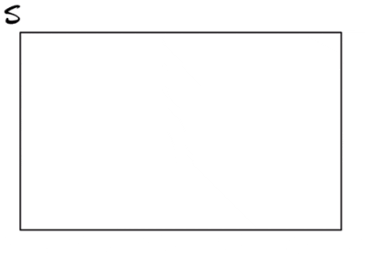

2 Basics of probability
$$
$$
In the context of a statistical experiment (Definition 1.1), we are interested in assigning probabilities to events. For an event \(A\) we denote by \(P(A)\) the probability that the event \(A\) occurs, that is the probability that the experiment generates an outcome in the set \(A\).
Some ground rules for how probabilities should be assigned to events are attributed to Andrey Kolmogorov. We call these the Kolmogorov axioms. An axiom is an assumed truth. One does not set about to prove an axiom, but regards it as self-evident. To the mind of Andrey Nikolaevich Kolmogorov the following ground rules according to which probabilities can be assigned to events were self-evident (perhaps they will seem so to our minds as well!):
Definition 2.1 (Probability axioms) Consider a statistical experiment with sample space \(S\) and let \(A\) and \(B\) be events in \(S\). Three axioms of probability are
- \(P(A) \geq 0\).
- \(P(S) = 1\).
- If \(A\) and \(B\) are mutually exclusive, then \(P(A \cup B) = P(A) + P(B)\).1
According to these axioms, probabilities cannot be negative, the probability of the sample space is equal to 1 (this is the probability that the experiment generates any outcome belonging to the sample space), and the probability of the occurrence of one or the other of two mutually exclusive events is the sum of their probabilities. Self-evident, right? Perhaps they bear meditating on. Think on them.
Example 2.1 (Flipping two coins) Flipping two coins is a statistical experiment with sample space \[ S = \{\text{HH}, \text{HT}, \text{TH}, \text{TT}\}, \] where \(\text{H}\) denotes “heads” and \(\text{T}\) denotes “tails”.
In the experiment of flipping two coins, we should have, for any subset of \(S\), that the probability is not negative. Moreover, we must have \(P(\{\text{HH}, \text{HT}, \text{TH}, \text{TT}\}) = 1\); that is, one has to observe one of these outcomes. Lastly, if we define mutually exclusive events \(A = \{\text{HH}\}\) and \(B = \{\text{HT}, \text{TH}\}\), we have \[ P(A \cup B) = P(A) + P(B) = 1/4 + 2/4 = 3/4. \]
We now present some consequences of the Kolmogorov axioms which will be useful to us.
Proposition 2.1 (First consequences of probability axioms) Let \(A\) be an event in a sample space \(S\). We have
- \(P(\emptyset) = 0\).
- \(P(A) \leq 1\).
- \(P(A^c) = 1 - P(A)\).
This claims in this proposition may seem axiomatic to us. Indeed, what is the probability of observing no outcome whatsoever? It ought to be zero! Also, it seems obvious that a probability should not be allowed to exceed \(1\). It also seems logical that the probability that an event does not occur should be one minus the probability that it does occur. These claims are implications of the Kolmogorov axioms.
In the experiment of flipping two coins, let \(A = \{\text{HH}\}\), which is the event of getting two “heads”; our intuition tells us \(P(A) = 1/4\). Now, the complement event is \(A^c = \{\text{HT}, \text{TH}, \text{TT}\}\), of which our intuition tells us \(P(A^c) = 3/4\). This accords with the third claim above.
Proposition 2.2 (More consequences of probability axioms) Let \(A\) and \(B\) be events in a sample space \(S\). We have
- \(P(B \cap A^c) = P(B) - P(A \cap B)\).
- \(P(A \cup B) = P(A) + P(B) - P(A \cap B)\).
- If \(A \subset B\), then \(P(A) \leq P(B)\).
These claims can all be shown to follow from the Kolmogorov axioms. Drawing Venn diagrams is a nice way to visualize them!
Example 2.2 (Meeting friends at a party) Consider the statistical experiment of going to a party and noting which of your friends you meet there. Let \(A\) be the event that you meet Adam at the party and let \(B\) be the event that you meet Bruce. Suppose \(P(A) = 0.4\), \(P(B) = 0.5\) and \(P(A \cap B) = 0.01\). We can use the above probability rules to compute the probabilities of various events:
- You meet Adam but not Bruce. \[ \begin{align*} P(A \cap B^c) &= P(A) - P(A \cap B) \\ &= 0.40 - 0.01 \\ &= 0.39. \end{align*} \]
- You meet one or the other or both of these friends. \[ \begin{align*} P(A \cup B) &= P(A) + P(B) - P(A \cap B) \\ &= 0.40 + 0.50 - 0.01 \\ &= 0.89. \end{align*} \]
- You meet either Adam or Bruce, but not both of them. \[ \begin{align*} P((A \cap B^c) \cup (A^c \cap B)) &= (A \cap B^c) + (A^c \cap B) \\ &= P(A) - P(A \cap B) + P(B) - P(A \cap B) \\ &= 0.40 - 0.01 + 0.50 - 0.01 \\ &= 0.88. \end{align*} \]
- You do not meet either of these friends. \[ \begin{align*} P(A^c \cap B^c) &= P( (A \cup B)^c ) \\ &= 1 -P(A \cup B) \\ &= 1 - 0.89\\ & = 0.11 \end{align*} \]
Another important consequence of the Kolmogorov axioms of probability is the law of total probability.
Proposition 2.3 (Law of total probability) Let \(A\) be an event in \(S\) and let \(C_1,C_2,\dots\) be a partition of \(S\). Then \[ P(A) = P(A \cap C_1) + P(A \cap C_2) + \dots \]

The idea of the law of total probability is that, with the help of a partition, we can write \(A\) as the union of several disjoint sets, so that \(P(A)\) can be written as a sum of probabilities.
This is actually a simplified version of the third Kolmogorov axiom. The actual third Kolmogorov axiom is referred to as the axiom of countable additivity. It extends what is stated here to certain collections of mutually exclusive sets.↩︎